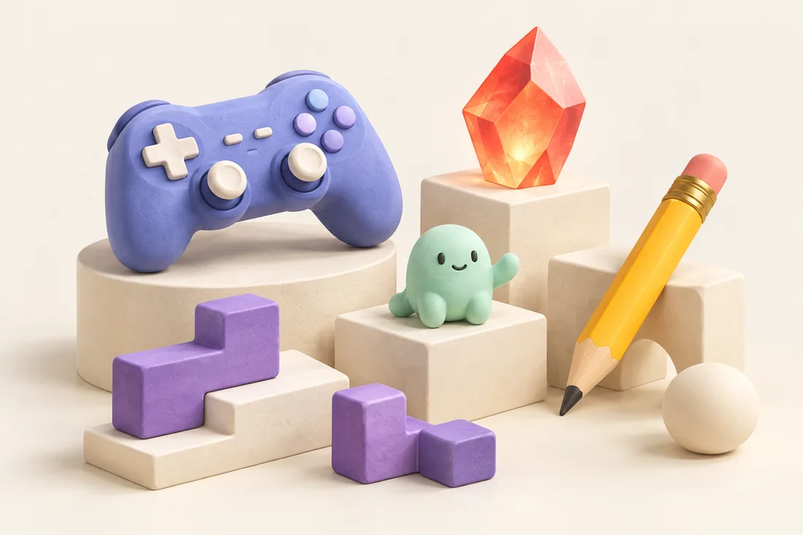

A LITTLE SPACE FOR BIG IDEAS
ひらめきを、
あそびに。
らくがきが動き出したり、モンスターが育ったり。
あそびも、ちょっと便利も。ブラウザから広がる実験室。
THE CREATIVE PLAYROOM / VOL. 01

Made of curiosity.SCROLL TO EXPLORE26 LITTLE DISCOVERIES
THE COLLECTION ✳
作品を見つけよう。
気になるタグを選んで、次のお気に入りを探してみて。
オフラインです。保存済みの一覧を表示しています。作品を開くにはネット接続が必要です。
まだ見つからないみたい。
別のキーワードやタグでもう一度探してみてください。
作品とGitHubへのリンクは、新しいタブで開きます。
BEHIND THE PLAYGROUND
つくって、ためして、
またつくる。
ここは、cadmium2525がつくったWeb作品のアトリエ。
「こんなのあったら面白そう」から生まれたゲームやツールを、
少しずつ並べていきます。
a work in play.
今日のひらめきが、
明日のあそびになる。